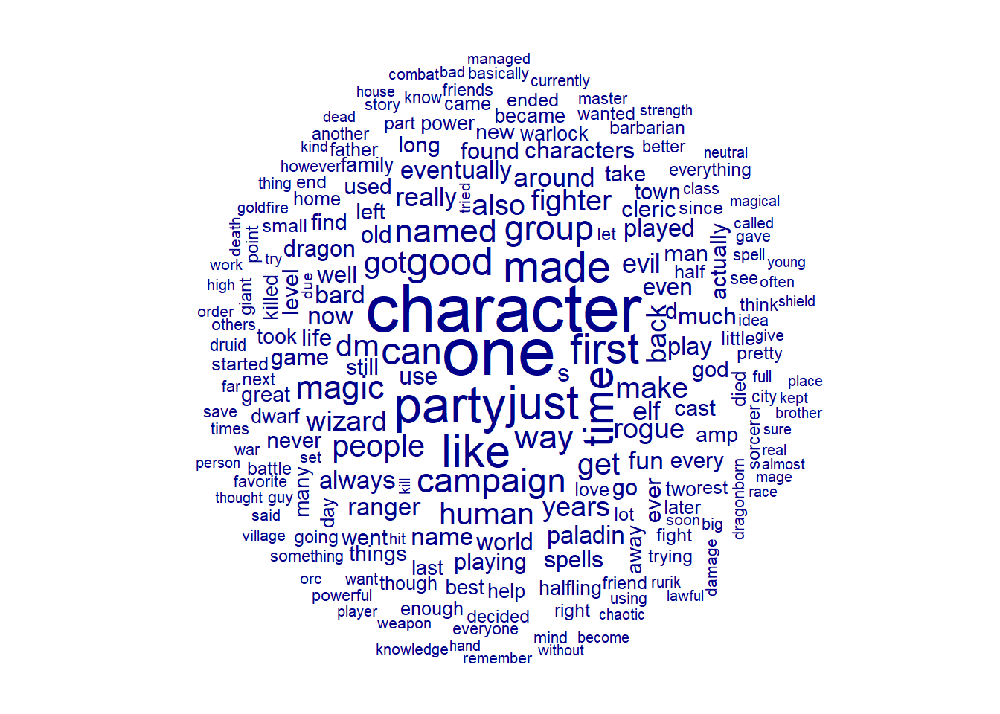
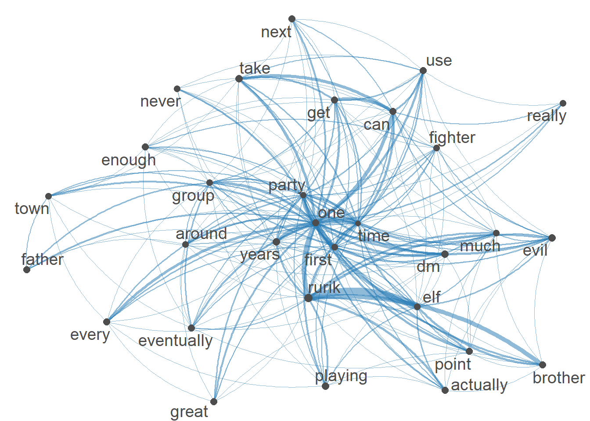

Code
# install.packages("rvest")
# install.packages("RedditExtractoR")
# install.packages("textclean")
library(RedditExtractoR)Warning: package 'RedditExtractoR' was built under R version 4.2.2Code
library(rvest)Warning: package 'rvest' was built under R version 4.2.2Code
library(tidyverse)── Attaching packages ─────────────────────────────────────── tidyverse 1.3.2 ──
✔ ggplot2 3.3.6 ✔ purrr 0.3.5
✔ tibble 3.1.8 ✔ dplyr 1.0.10
✔ tidyr 1.2.1 ✔ stringr 1.4.1
✔ readr 2.1.3 ✔ forcats 0.5.2
── Conflicts ────────────────────────────────────────── tidyverse_conflicts() ──
✖ dplyr::filter() masks stats::filter()
✖ readr::guess_encoding() masks rvest::guess_encoding()
✖ dplyr::lag() masks stats::lag()Code
library(quanteda)Package version: 3.2.3
Unicode version: 13.0
ICU version: 69.1
Parallel computing: 8 of 8 threads used.
See https://quanteda.io for tutorials and examples.Code
library(quanteda.textplots)
library(textclean)Warning: package 'textclean' was built under R version 4.2.2Code
url <- c("https://www.reddit.com/r/DnD/comments/b1pk5c/tell_me_about_your_characters/",
"https://www.reddit.com/r/DnD/comments/33bv4f/best_dd_character_youve_made_or_seen/",
"https://www.reddit.com/r/DnD/comments/37cx49/your_first_ever_dd_character/",
"https://www.reddit.com/r/rpg/comments/2fk4op/best_dd_character_youve_ever_made/",
"https://www.reddit.com/r/DnD/comments/cgdwgl/share_your_dnd_character/",
"https://www.reddit.com/r/dndnext/comments/au8k0w/what_are_some_of_your_favourite_dd_character/")
#comments <- get_thread_content(url)
#save.image("mantek_blogpost3.RData")
load("mantek_blogpost3.RData")
#preprocessing
all_comments <-
comments$comments$comment %>%
str_replace_all("\n"," ") #data cleaning
all_comments <- replace_contraction(all_comments) #opened all contractions, like didn't to did not
tail(all_comments, n = 10) #Some of the comments [1] "After watching a tierzoo video about companion races in nature, I want to play a Grung beastmaster. Their pet is a giant wolfspider, which the Grung rides. It is a cute combination, but with Grung racials it can work surprisingly well. The Grung has poison it can apply to weapons so would either go duelling shortswords or archery hand crossbow master. Adding 2d4 poison damage each hit is sure to add up - it\031s a \034free\035 Hunter\031s Mark!"
[2] "Human champion fighter with spear mastery, soldier. A 30 year old, ugly bald peasant who was forcably conscripted at a young age. He was forced to fight in a war where he suffered hardship, sickness which turned him into an angry bitter man. I like the simpilcity of it, I do not typically do for ther most heroic characters. "
[3] "I am having the most fun playing Mantaraya, a water genasi fighter with a passion for sewing. He once outswam a bull shark to save a friend and is therefore styled after a matador. He has horrible rolls in combat. Other notable characters include: Lim: a half elf evocation wizard from a well respected family of high elf divination wizards. Her elf mother cheated on her father and died in childbirth, and her father was too focused on his studies to notice or care. She has an heirloom set of her grandmother's bones that she can not actually use to divine anything. Nonetheless she pretends (I normally roll all of my dice and make generalizations from their total). Riis: the \"human male farmer\" who is actually a half elf female rogue in disguise. She is a pathological liar and deeply committed this alter ego, even when the facts do not line up. I played her in a bronze age campaign, which happened to end with the assassination of their heir to the Persian Empire. Shortly after, Cyrus the Great ascended and Riis slipped out of spotlight. Coincidence? Ksssht: my first ever character was an owlbear. Her cubs were taken and sold into slavery, so she came out of the forest to find them and left absolute destruction wherever she went. The party also included a deranged warlock, so the paladin spent a lot of time apologizing to/buying off local business owners . "
[4] "I\031ve got 1 more! - Bronze Dragon, Red dragon sorc 14/Fiendlock 3/Champion 3, Haunted one \024 Bronze Dragonborn kicked out of clan after Tiamat makes him a warlock and draws out his red dragon blood. Take elemental adept and dragon fear feats if cha is maxed. Dex and con should be semi-decent. For added fun, take eldritch blast and agonising blast invocation. At max, this can do 4d10+20. Quicken spell another for another 1d10+5 and action surge. Assuming all hit, that\031s 10d10+50"
[5] "Human, beserker barbarian and vengence paladin. An old man, about 45 years old. A psychopath whose blood lust knows no bound, yet has developed enough discipline and mental fortitude to resist it. A violent and wrathful man. He has spent years focusing and weaponising his rage and cruelty on those who deserve it. With friends and family he is the kindest and most loving man you will see. With his enemies, all they see is the monster that makes other monster run in terror. Really want to play this guy, but he is wayy too destructive and cruel to unleash on any DM."
[6] "Rogue trickster but reimagined as a 17 y.o. boy that is TRYING for maximum edge. Taking necromancy spells for flavor hes on a quest to prove to his mom and dad that \"it is not just a phase\""
[7] "My current favorite character concept just because I have gotten so much mileage out of it. Is an evil gnome wizard who uses a forgery kit to impersonate various government officials. Health and Safety inspector!, Weights and Measures departments, ect. ect. ect. Or Oh by the way Duegar Leader this scroll I found, depicts you as the HEROINE OF LEGEND WHO SLAYS THE DRAGON...oh by the way there is also a handsome gnome wizard depicted as your advisor! wow! Its nice to have a way to interact with NPC's without a high Cha score."
[8] "A druid black cat who is embarrassed by her human form. She has a tragic background. She was originally from the coast tribe, and therefore knows misty step, water walking, and water breathing. But because she was extraordinarily pretty as a human, her tribe sold her into slavery when she was 8. She escaped, and now is a mercenary chaoitic neutral. She is incredibly independent, and does not trust anyone and is just trying to survive. Because of her relationship with the coast tribe, she hates water and has taken an interest in fire spells. She hates being touched or pet, is extremely self-conscious about her human form, and goes to great lengths to make sure nobody sees her human form. She is adept in defensive water and fire magic. She is in desperate need of a bond, and if she finds one, it will be the most important thing in the world to her."
[9] "Here's one I thought was pretty funny. A dwarven fighter gunslinger whose main goal was to industrialize the crafting and manufacturing of firearms and then sell them to warring kingdoms in the hopes of become a war profiteer and further expanding his influence to more kingdoms."
[10] "I have been waiting to do an artificer multiclassing into paladin. Dwarf as race. When an engineer graduated university, they take the Engineers Creed. If you are unaware of what that is, essentially they swear to serve the betterment of mankind with honesty, integrity, etc. I would build him as a support character making prosthetics, maybe armor, and other non combatative tools (maybe nonlethal weapons if I did any at all). Rp character more than anything" Code
reddit_DnD_characters <- corpus(all_comments)
DnD_summary <- summary(reddit_DnD_characters, n = Inf)
DnD_summary #SUmmary of the corpusCorpus consisting of 375 documents, showing 375 documents:
Text Types Tokens Sentences
text1 207 379 15
text2 17 18 2
text3 53 66 2
text4 48 58 3
text5 15 18 2
text6 39 42 4
text7 1 1 1
text8 69 93 1
text9 45 52 3
text10 74 112 5
text11 96 134 6
text12 10 11 2
text13 176 313 15
text14 67 90 5
text15 199 366 18
text16 24 29 3
text17 68 86 6
text18 60 84 4
text19 81 106 8
text20 128 217 7
text21 559 1118 55
text22 150 250 10
text23 414 955 45
text24 57 81 2
text25 226 420 15
text26 207 345 13
text27 127 228 5
text28 194 364 12
text29 116 196 8
text30 16 17 1
text31 74 107 6
text32 233 404 13
text33 25 28 3
text34 229 421 17
text35 67 86 5
text36 174 300 10
text37 110 182 13
text38 218 396 10
text39 64 86 4
text40 51 64 3
text41 295 606 24
text42 262 528 23
text43 45 55 6
text44 413 929 47
text45 208 403 12
text46 6 6 1
text47 17 17 1
text48 114 188 8
text49 13 13 1
text50 22 26 2
text51 36 44 3
text52 54 78 4
text53 18 19 1
text54 141 231 12
text55 35 44 3
text56 23 25 2
text57 42 46 1
text58 37 47 4
text59 160 270 3
text60 106 166 9
text61 134 227 17
text62 25 26 2
text63 10 10 1
text64 111 196 8
text65 96 139 8
text66 104 136 7
text67 218 370 16
text68 27 32 3
text69 21 24 2
text70 91 142 9
text71 41 59 5
text72 3 3 1
text73 33 41 3
text74 10 10 2
text75 234 442 24
text76 93 150 7
text77 126 194 7
text78 21 21 2
text79 9 9 1
text80 36 47 2
text81 68 88 4
text82 42 50 1
text83 41 50 3
text84 3 3 1
text85 17 17 1
text86 17 18 3
text87 9 9 1
text88 15 15 1
text89 146 241 10
text90 68 87 4
text91 151 258 8
text92 145 264 14
text93 58 80 5
text94 67 92 3
text95 134 236 12
text96 71 98 4
text97 64 82 5
text98 199 393 23
text99 541 1299 46
text100 189 309 11
text101 64 83 5
text102 188 366 12
text103 241 442 16
text104 50 62 4
text105 295 623 32
text106 212 369 1
text107 166 281 16
text108 81 115 2
text109 134 226 1
text110 189 349 14
text111 317 683 39
text112 128 210 10
text113 169 311 21
text114 174 289 13
text115 85 141 7
text116 10 10 1
text117 8 10 2
text118 114 171 11
text119 22 26 3
text120 19 22 2
text121 121 196 8
text122 94 139 5
text123 103 164 13
text124 49 71 4
text125 52 63 3
text126 140 243 8
text127 158 275 17
text128 34 46 4
text129 104 175 13
text130 20 22 3
text131 44 60 5
text132 51 64 2
text133 9 10 2
text134 23 28 4
text135 142 224 9
text136 89 138 5
text137 59 94 6
text138 24 24 1
text139 39 51 4
text140 12 13 1
text141 15 15 1
text142 61 74 4
text143 7 7 1
text144 77 98 4
text145 80 114 4
text146 27 31 2
text147 47 59 3
text148 129 192 6
text149 66 91 6
text150 44 50 3
text151 55 91 5
text152 27 34 4
text153 102 160 7
text154 33 36 2
text155 96 140 5
text156 31 34 3
text157 67 79 3
text158 59 79 3
text159 70 99 5
text160 147 250 11
text161 40 61 4
text162 113 188 7
text163 14 17 2
text164 34 39 2
text165 34 44 3
text166 83 115 10
text167 94 140 12
text168 114 163 6
text169 28 36 3
text170 199 359 9
text171 44 56 3
text172 160 238 13
text173 91 136 5
text174 75 112 6
text175 32 40 4
text176 57 72 4
text177 69 103 6
text178 157 291 17
text179 152 287 16
text180 97 136 4
text181 352 803 38
text182 99 145 7
text183 101 169 9
text184 143 227 10
text185 80 130 3
text186 68 84 4
text187 43 57 5
text188 84 115 2
text189 61 78 5
text190 24 26 3
text191 7 7 1
text192 81 118 6
text193 26 32 3
text194 58 72 4
text195 93 132 6
text196 47 65 4
text197 101 155 9
text198 46 61 6
text199 85 132 6
text200 10 10 1
text201 77 127 10
text202 368 858 46
text203 21 24 2
text204 54 71 5
text205 79 105 5
text206 187 357 20
text207 16 18 3
text208 10 15 2
text209 36 50 2
text210 145 247 9
text211 89 120 6
text212 20 20 1
text213 48 71 5
text214 102 156 9
text215 197 370 19
text216 10 12 1
text217 56 75 4
text218 74 99 7
text219 2 2 1
text220 19 20 2
text221 1 1 2
text222 146 230 17
text223 10 10 1
text224 19 23 2
text225 21 22 2
text226 22 25 1
text227 19 24 3
text228 64 83 5
text229 39 47 2
text230 12 12 2
text231 13 14 1
text232 208 387 20
text233 9 9 1
text234 264 518 20
text235 63 75 3
text236 230 461 22
text237 18 20 1
text238 118 184 15
text239 124 211 13
text240 6 6 1
text241 23 25 5
text242 6 6 2
text243 177 308 15
text244 106 174 7
text245 189 350 18
text246 3 3 1
text247 13 13 1
text248 34 46 2
text249 133 224 13
text250 74 108 5
text251 22 22 2
text252 156 289 12
text253 73 92 4
text254 312 687 72
text255 82 108 4
text256 135 207 13
text257 151 259 9
text258 89 118 9
text259 135 225 5
text260 107 166 6
text261 136 241 10
text262 36 43 4
text263 19 24 2
text264 43 53 5
text265 8 8 1
text266 96 145 8
text267 77 111 6
text268 58 73 7
text269 53 68 5
text270 15 17 1
text271 43 56 3
text272 3 3 1
text273 49 71 4
text274 0 0 0
text275 51 66 5
text276 22 25 2
text277 425 941 39
text278 192 320 12
text279 117 201 9
text280 490 1278 38
text281 127 217 13
text282 304 738 29
text283 243 464 28
text284 77 118 4
text285 10 10 1
text286 87 120 6
text287 38 50 2
text288 37 47 2
text289 28 30 1
text290 3 3 1
text291 14 15 1
text292 144 221 9
text293 99 144 5
text294 12 12 1
text295 82 119 5
text296 66 80 5
text297 75 99 6
text298 19 19 1
text299 246 473 16
text300 107 147 6
text301 192 352 16
text302 153 255 13
text303 123 209 7
text304 12 13 1
text305 44 53 2
text306 146 254 11
text307 106 178 8
text308 27 33 1
text309 341 717 5
text310 29 33 1
text311 163 304 12
text312 3 3 1
text313 44 103 4
text314 250 489 18
text315 128 204 8
text316 69 96 6
text317 305 594 13
text318 178 317 16
text319 150 280 11
text320 5 6 1
text321 147 232 8
text322 41 56 5
text323 73 110 4
text324 26 31 2
text325 63 78 3
text326 119 202 8
text327 62 76 5
text328 17 18 3
text329 25 28 1
text330 7 7 1
text331 305 760 36
text332 61 82 2
text333 6 9 2
text334 141 216 13
text335 15 16 2
text336 2 2 1
text337 41 45 4
text338 95 142 5
text339 51 65 2
text340 20 22 1
text341 110 206 8
text342 98 154 8
text343 47 59 2
text344 181 269 14
text345 100 144 7
text346 75 106 3
text347 11 11 1
text348 92 149 5
text349 67 85 3
text350 31 38 3
text351 61 82 5
text352 144 273 15
text353 179 282 12
text354 80 114 6
text355 81 127 7
text356 7 7 1
text357 4 4 1
text358 285 596 24
text359 18 19 1
text360 98 138 6
text361 115 170 8
text362 110 177 7
text363 15 15 1
text364 59 83 4
text365 390 813 26
text366 67 88 5
text367 57 67 4
text368 178 273 15
text369 82 105 7
text370 80 116 8
text371 34 42 2
text372 80 110 6
text373 99 176 10
text374 39 48 2
text375 70 89 6Code
DnD_tokens <- tokens(reddit_DnD_characters); DnD_tokens #tokens before preprosessingTokens consisting of 375 documents.
text1 :
[1] "I" "will" "give" "my" "top" "three" ":"
[8] "*" "*" "Moxt" "Draaxis" "of"
[ ... and 367 more ]
text2 :
[1] "I" "love" "both" "of" "these" "dragon"
[7] "builds" "." "My" "newest" "character" "is"
[ ... and 6 more ]
text3 :
[1] "Human" "Ex-Monk" "Rogue" "." "He" "used"
[7] "to" "live" "in" "a" "monastery" "but"
[ ... and 54 more ]
text4 :
[1] "I" "play" "a" "black" "Dragonborn"
[6] "Hexblade" "Warlock" "who" "has" "recently"
[11] "come" "into"
[ ... and 46 more ]
text5 :
[1] "Water" "Genasi" "Cleric" "of" "the" "Moon"
[7] "Weaver" "who" "is" "from" "the" "Elemental"
[ ... and 6 more ]
text6 :
[1] "Brass" "Dragonborn" "Cleric" "of" "the"
[6] "Forge" "." "Performer" ":" "specifically"
[11] "sword" "swallowing"
[ ... and 30 more ]
[ reached max_ndoc ... 369 more documents ]Code
#Removed Punctuation
#Removed symbols
#Removed Numbers
#Removed Stopwords
DnD_tokens <- tokens(reddit_DnD_characters, remove_punct=TRUE, remove_symbols = TRUE,
remove_numbers = TRUE) %>%
tokens_select(pattern=stopwords("en"), selection="remove"); DnD_tokensTokens consisting of 375 documents.
text1 :
[1] "give" "top" "three" "Moxt" "Draaxis"
[6] "Clan" "Korinth" "White" "Dragonborn" "Barbarian"
[11] "peircing" "blue"
[ ... and 166 more ]
text2 :
[1] "love" "dragon" "builds" "newest" "character"
[6] "Dragonborn" "raised" "halflings"
text3 :
[1] "Human" "Ex-Monk" "Rogue" "used" "live" "monastery"
[7] "abandoned" "chaotic" "didn" "t" "abide" "rules"
[ ... and 22 more ]
text4 :
[1] "play" "black" "Dragonborn" "Hexblade" "Warlock"
[6] "recently" "come" "power" "spirit" "dead"
[11] "silver" "dragon"
[ ... and 16 more ]
text5 :
[1] "Water" "Genasi" "Cleric" "Moon" "Weaver" "Elemental"
[7] "Plane" "Air" "Yup"
text6 :
[1] "Brass" "Dragonborn" "Cleric" "Forge" "Performer"
[6] "specifically" "sword" "swallowing" "come" "better"
[11] "go" "Later"
[ ... and 7 more ]
[ reached max_ndoc ... 369 more documents ]Code
DnD_dfm <- DnD_tokens %>%
dfm() %>%
dfm_trim(min_termfreq = 20, verbose = FALSE)
DnD_dfm #The DFMDocument-feature matrix of: 375 documents, 212 features (91.78% sparse) and 0 docvars.
features
docs give dragonborn barbarian love good fight well also go way
text1 1 1 1 1 2 1 2 4 1 1
text2 0 1 0 1 0 0 0 0 0 0
text3 0 0 0 0 1 0 0 0 0 0
text4 1 1 0 0 0 0 0 0 0 0
text5 0 0 0 0 0 0 0 0 0 0
text6 0 1 0 0 0 0 0 0 1 0
[ reached max_ndoc ... 369 more documents, reached max_nfeat ... 202 more features ]Code
all_features <- featnames(DnD_dfm); all_features [1] "give" "dragonborn" "barbarian" "love" "good"
[6] "fight" "well" "also" "go" "way"
[11] "help" "others" "people" "world" "home"
[16] "house" "paladin" "however" "made" "small"
[21] "back" "dragon" "sorcerer" "spells" "like"
[26] "fun" "fire" "always" "character" "human"
[31] "rogue" "used" "chaotic" "basically" "just"
[36] "make" "magic" "s" "kind" "even"
[41] "name" "play" "warlock" "power" "dead"
[46] "weapon" "war" "cleric" "better" "later"
[51] "little" "called" "two" "time" "soon"
[56] "going" "ranger" "sure" "last" "pretty"
[61] "party" "big" "campaign" "d" "amp"
[66] "think" "best" "life" "many" "left"
[71] "see" "since" "named" "real" "something"
[76] "new" "part" "family" "killed" "ever"
[81] "one" "day" "got" "away" "took"
[86] "came" "found" "decided" "find" "spell"
[91] "now" "right" "story" "dwarf" "druid"
[96] "death" "old" "friend" "person" "city"
[101] "god" "full" "man" "elf" "first"
[106] "knowledge" "can" "cast" "wizard" "group"
[111] "gold" "bard" "times" "trying" "long"
[116] "remember" "place" "went" "lot" "still"
[121] "young" "around" "using" "get" "things"
[126] "use" "try" "friends" "much" "game"
[131] "played" "level" "fighter" "high" "neutral"
[136] "hand" "another" "town" "currently" "order"
[141] "class" "never" "really" "often" "magical"
[146] "due" "battle" "hit" "without" "started"
[151] "master" "became" "become" "far" "player"
[156] "take" "every" "damage" "characters" "halfling"
[161] "lawful" "want" "let" "know" "idea"
[166] "years" "shield" "ended" "powerful" "everyone"
[171] "gave" "though" "evil" "bad" "strength"
[176] "work" "almost" "said" "kill" "great"
[181] "giant" "guy" "enough" "wanted" "mind"
[186] "mage" "father" "village" "actually" "race"
[191] "eventually" "set" "next" "half" "orc"
[196] "tried" "save" "end" "managed" "point"
[201] "combat" "dm" "kept" "brother" "favorite"
[206] "thought" "playing" "thing" "died" "rest"
[211] "everything" "rurik" Code
topfeatures(DnD_dfm, 100) one character party just like made time
190 184 134 119 117 110 109
first good can group campaign way named
109 98 94 84 82 79 79
magic people get dm human got make
77 73 71 71 70 70 67
fighter also rogue wizard years back evil
67 66 64 64 64 62 61
around elf really bard always ranger now
59 58 58 57 56 56 56
eventually name world paladin fun play played
56 55 54 54 53 53 53
even old use s dragon d life
52 52 52 51 50 50 50
game playing well go spells cleric found
50 50 49 48 48 48 48
much characters left ever man cast every
48 48 47 46 46 46 46
used find never level god long went
45 45 45 44 43 43 43
still town take actually new things amp
43 43 43 43 42 42 41
took great last best family many away
41 41 40 40 40 39 39
help warlock power killed dwarf became halfling
38 38 38 38 37 37 37
two love home later day though enough
36 35 35 35 35 35 35
died little
35 34 Code
textplot_wordcloud(DnD_dfm) #Word Cloud of the existing tokens
Code
#creating a Network plot
DnD_fcm = fcm(DnD_dfm)
# pull the top features
myFeatures = names(topfeatures(DnD_fcm, 30))
# retain only those top features as part of our matrix
Smaller_fsm = fcm_select(DnD_fcm, pattern = myFeatures, selection = "keep")
# compute size weight for vertices in network
size = log(colSums(Smaller_fsm))
# create plot
textplot_network(Smaller_fsm, vertex_size = size / max(size) * 3)
Code
#kwic_time <- kwic(reddit_DnD_characters, pattern = phrase("time")); head(kwic_time, n=10)
#kwic_character <- kwic(reddit_DnD_characters, pattern = phrase("character")); head(kwic_character, n=10)
#kwic_party <- kwic(reddit_DnD_characters, pattern = phrase("party")); head(kwic_party, n=10)